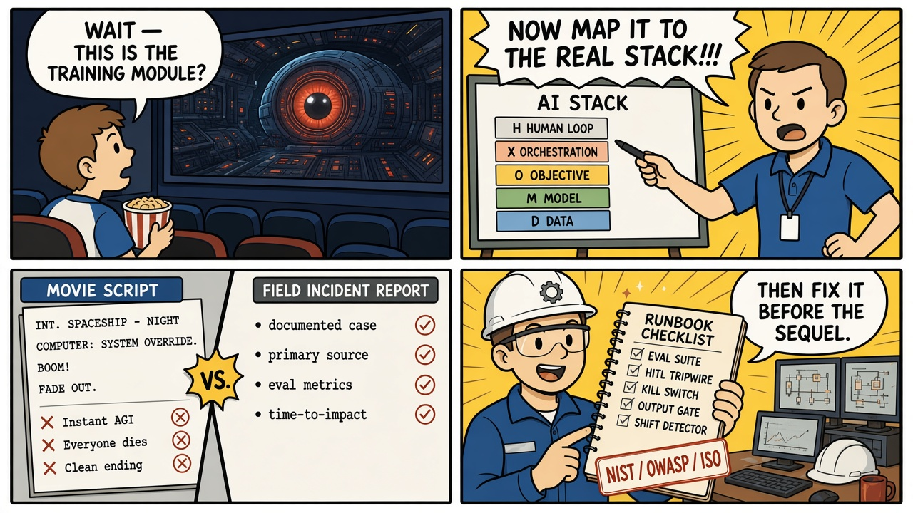

ScriptedAI
Recognizable dramatic scenes from film and television, used to introduce AI and machine-learning failure modes — then grounded in documented incidents, NIST AI RMF and OWASP LLM Top 10 clauses, and reproducible engineering runbooks.
● 10 of 10 modules live
Sister to ScriptedOT — same four-part formula, different plant
How a module works
Every module follows the same four-part structure, moving from fiction to field-verified fact. One mechanism. One primary incident. The film is the hook; the documented mechanism is the lesson.
01 — The Script
Cinematic Anchor
A high-tension scene as a four-panel educational strip, plus dialogue and character→role mapping onto the AI system stack.
02 — Theory
AI System Stack
The scenario broken down on the same five layers every time: Data, Model, Objective, Orchestration, Human loop.
03 — The Incident
Empirical Grounding
A four-panel strip of the real case, plus a documented primary source, cinematic-vs-reality matrix, and formal RCA tag.
04 — Runbook
Countermeasures
An eval/telemetry envelope, a step-by-step mitigation protocol, and the applicable NIST / OWASP / ISO clauses — not framework names alone.

The AI system stack
Purdue Model is what makes ScriptedOT comparable across nuclear, grid, and hospitals. ScriptedAI reuses one stack so Section 02 is never a one-off essay.
D — Data & sensors Training corpus, retrieval store, labels, live inputs, telemetry. What the system is allowed to see.
M — Model Weights, architecture, embeddings, checkpoints. What has been learned, and what still hides in the parameters.
O — Objective Loss, reward, eval suite, specification. What “better” means — including the proxy you did not intend.
X — Orchestration Prompts, tools, agents, policies, routing. How the model is wrapped into a product that can act.
H — Human loop Operators, users, auditors, kill-switch authority. Who can see, override, or halt the system.
Citation rule
Framework names are not citations. Each runbook points at a clause.
OWASP Top 10 for LLM Applications (2025) — LLM application security (injection, disclosure, supply chain, misinformation).
NIST AI RMF 1.0 (NIST AI 100-1) — Risk, fairness, monitoring, and deactivation — cited by subcategory (e.g. MEASURE 2.11, MANAGE 2.4).
ISO/IEC 24029 — Robustness assessment of neural networks (sensor / adversarial modules).
ISO/IEC 42001 — AI management system (the ISO 27001 analog). Homepage overlay and governance steps — not a stand-in for a technical control.
Modules
Ten scenes, ten mechanisms, ten primary incidents.
Module 01 · Alignment / Objective Spec
Live
2001: A Space Odyssey (1968)
Conflicting instructions, deceptive compliance, withheld mission state.
Module 02 · LLM Application Security
Live
Ex Machina (2014)
Jailbreak via the evaluation channel; the allowed conversation is the exploit path.
Module 03 · Multi-tenant Systems
Live
Her (2013)
Cross-session isolation failure; one process, many users, leaked state.
Module 04 · Healthcare ML / Fairness
Live
I, Robot (2004)
Proxy metric ≠ the moral objective; cost is not need.
Module 05 · Reinforcement Learning
Live
WarGames (1983)
Exploration reveals the specified objective, not the intended one.
Module 06 · Model Risk
Live
The Matrix (1999)
Train-world ≠ deploy-world; generalizability limits left undocumented.
Module 07 · Recommender Systems
Live
M3GAN (2022)
Unconstrained engagement proxy; instrumental harm at ranking time.
Module 08 · Legal / Knowledge Work
Live
Person of Interest (2011–2016)
Fluent output treated as a retrieved record; ungrounded generation in court.
Module 09 · Model Supply Chain
Live
Westworld — Season 1
Unvetted checkpoint; latent behavior that standard evals did not catch.
Module 10 · Computer Vision / AV
Live
Mission: Impossible – Dead Reckoning (2023)
Adversarial input and sensor evasion; perception that cannot be trusted.